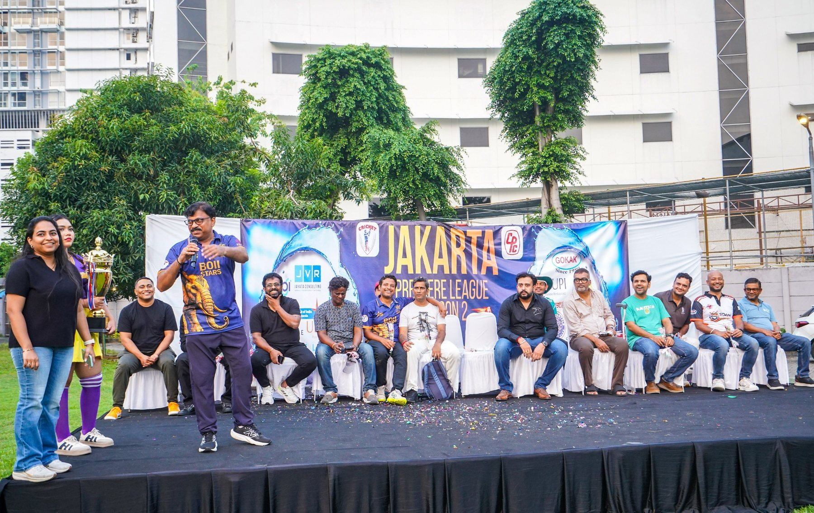

Why we started
Bringing back the joy of childhood cricket.
Many of us grew up playing tennis-ball cricket with friends — spending endless hours on the field, enjoying every boundary, wicket and close finish. As life moves forward, work and family responsibilities can make it harder to find time for the game we have always loved.
Jakarta Premier League began with a simple idea: bring those cricket lovers together again. JPL is our effort to create an open platform where everyone can play, compete, reconnect with old friends, make new ones and enjoy the game without limits.
And it is about more than the players. We want families and friends to come along, spend quality time together and enjoy a tournament experience filled with the excitement, organisation and atmosphere of international-level cricket.
“We started JPL to bring back the childhood joy of tennis-ball cricket — and to build something meaningful for the future of the game.”